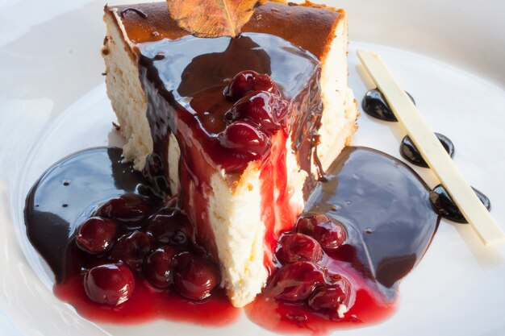

Cheesecake

Cheesecake is undoubtedly one of the most famous desserts in the world and that must be attributed to its exquisite flavor.
Ingredients
- 1 3/4 cups Honey Maid Graham Cracker Crumbs
- 1/3 cup butter (melted)
- 1 1/4 cups sugar
- 3 packages (8 ounce) Cream Cheese (softened)
- 1 cup Sour Cream
- 2 teaspoons vanilla
- 3 large eggs
- 1 can (21 ounce) cherry pie filling
Instructions
- Preheat the oven to 350°F (180°C).
- Mix graham crumbs, butter, and 1/4 cup sugar together in a large bowl.
- Press crumbs onto bottom of 9-inch springform pan.
- Beat cream cheese and remaining sugar in large bowl with mixer until blended. Add sour cream and vanilla; mix well.
- Add eggs, 1 at a time, beating on low speed after each addition just until blended.
- Pour mixture over crust.
- Bake in the preheated oven until the center is almost set, about 1 hour to 1 hour 10 minutes. Run knife around rim of pan to loosen cake; cool before removing rim. Refrigerate cheesecake 4 hours.
- Top with cherry pie filling before serving.
Return to main page